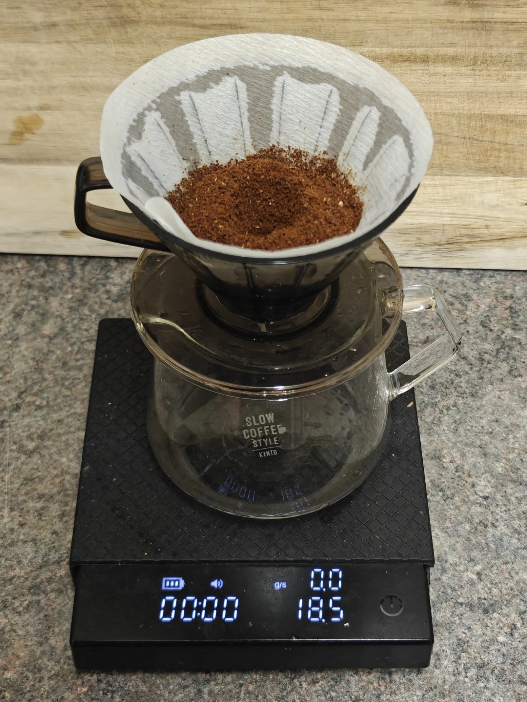
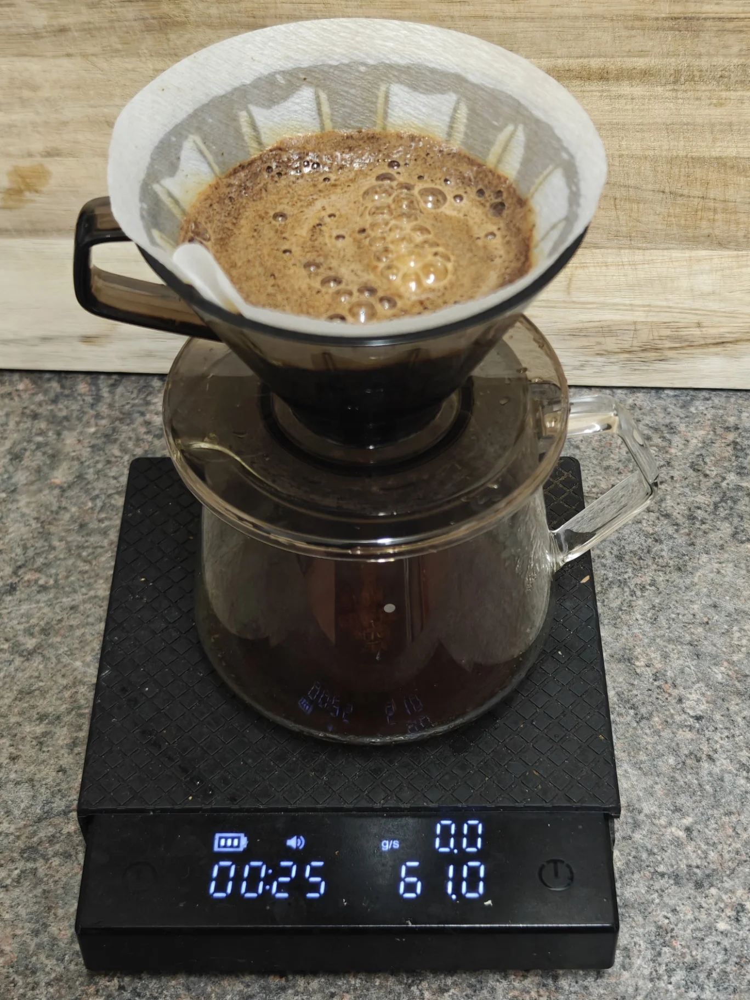
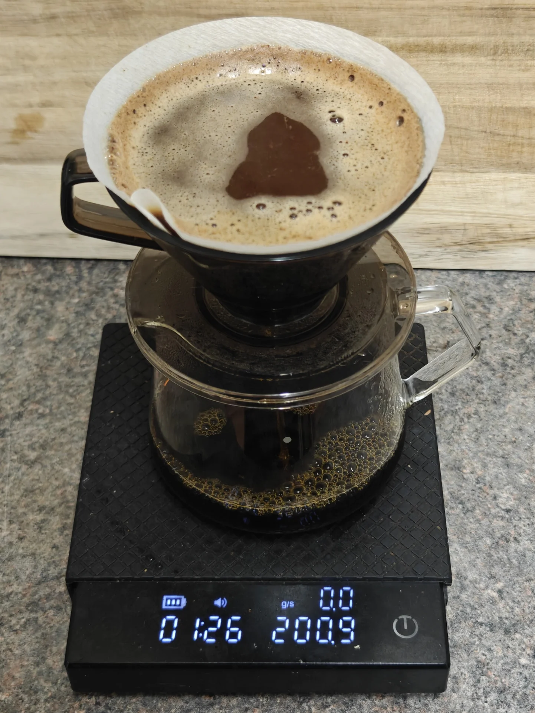
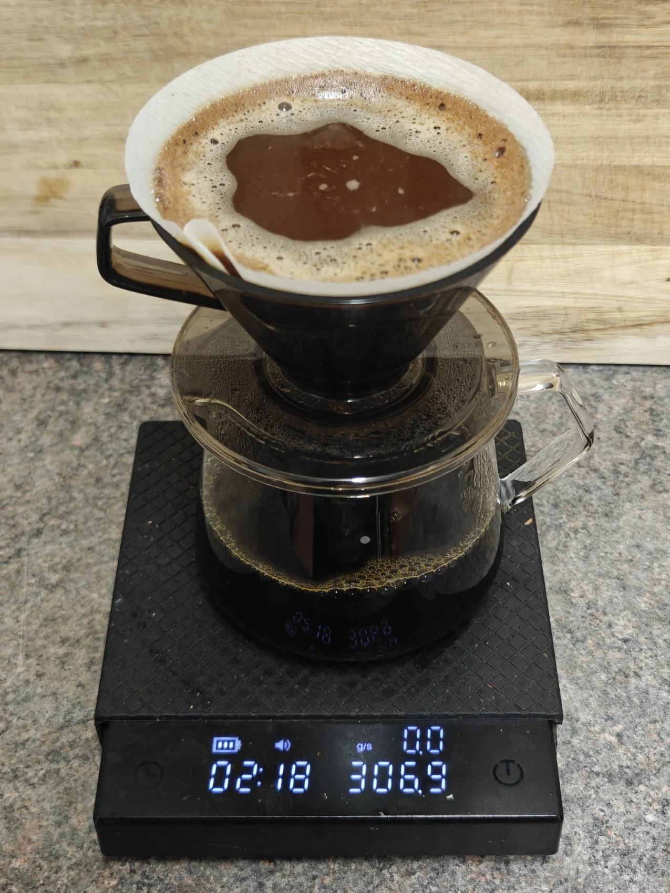
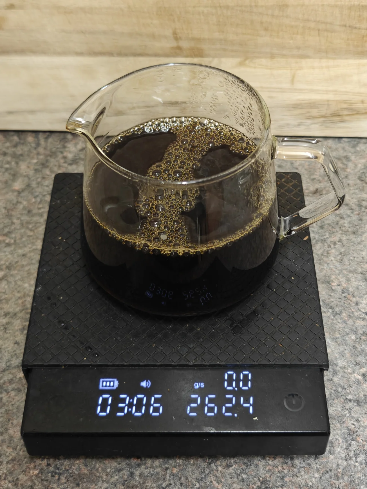
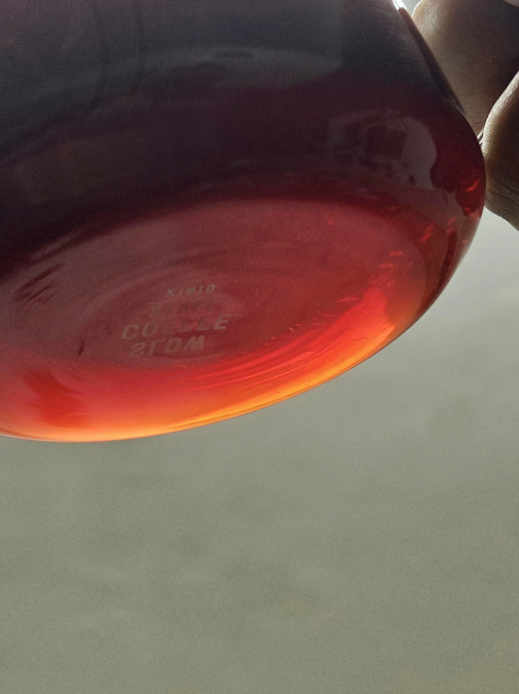
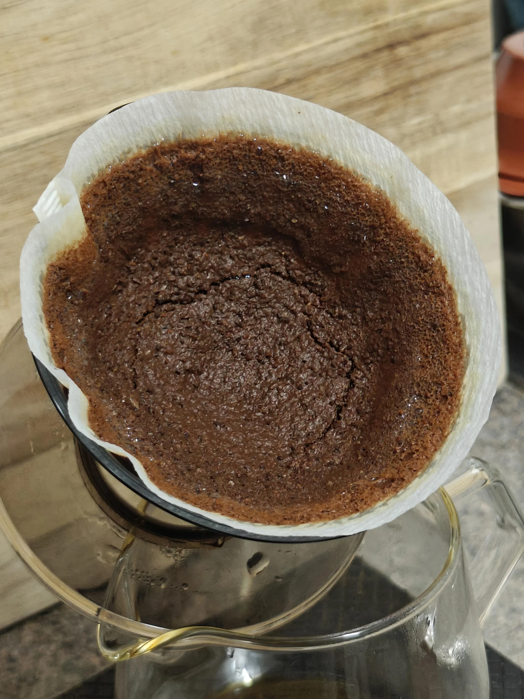

Brew recipe: 18.5g coffee and 300g water at 90-95°C
0:00 60g (0g total) - 0:10 (6g/s)
1:00 140g (200g total) - 1:20 (7g/s)
2:00 100g (300g total) - 2:10 (10g/s)
3:00 Finished
Tea culture is varied, each with its specific results. Two widely enjoyed styles are the "Western" and the gong fu style; the former being a teabag dunked into hot water or a gram (at most) being infused in a large pot of water and then decanted. Gong fu style is slightly different: a couple of grams of loose-leaf tea infused into 30-40g of water. When poured out, it's a very concentrated, textured brew with a sensation known as "hui gan" - a returning sweetness.
This tea-like brew tries to accomplish the generic markers - high clarity and high sweetness with a weak but refreshing finish. This tea-like brew focuses on utilising agitation and changing parameters to extract different flavour profiles.
This recipe uses a 1:3 bloom with a high pour to encourage saturation, then a longer pour (the bulk of the recipe) to create movement and flow. The final pour will be significantly heavier and faster to prevent channelling and provide enough room for all the liquor to drawdown.
Considering agitation is used throughout, it may be ideal to use a larger grind size and/or a lower water temperature. By dialling in this factor, we can brew heavily fermented coffees without the cloying "artificial" sweetness or give washed coffee an atypical sense of complexity.
The pour structure mentioned above is simple; adjusting for the coffee itself, we can use as low as 90°C due to having a considerably heavy pour from the onset. The key pour style will be just above the rim of the brewer, in spirals, from the middle to the edge and back to the middle.
We are using 18.5g of coffee, 300g of water, and staying at 90-95°C throughout. Each pour will be either 10 or 20s after each minute mark.
Starting with the bloom at 0:00, we do a 60g bloom over the 18.5g of ground coffee until the timer reaches 10s. My pour rate here is 6g of water per second, using the natural agitation from the pour to break up the bed.
The second pour is at 1:00 (50s rest from the bloom); we pour 140g until the timer reaches 1:20. Pouring at 7g/s, the style is similar to the bloom.
The final pour is at 2:00 (40s rest from the previous pour); we pour 100g until the timer reaches 2:10. The pour rate here is 10g per second, consistent style as the previous two pours.
No more pours after 2:10, and the brew should finish at 3:10 ± 10s.
The brew should be similar to tea, with a gradient of clarity and opaqueness. The aromatics will be similar to oolong mixed with raisins. The taste profile is a normal tea-like brew, clean with appropriate acidity; the clarity is quite prominent. The lingering aftertaste is a long finish that brings back perceived sweetness after a while, very similar to a good gong fu session.
The coffee bed will follow the shape of the brewer, showing signs of high agitation, non-flat bed with patches around the sides.






